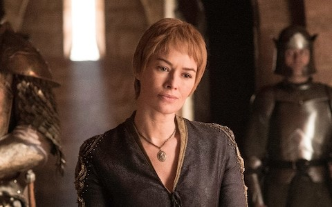

The only daughter of Tywin Lannister and twin of Jaime. Cersei is cruel and vain – but her love of her children was genuine. As a young woman she was told by a witch that all her offspring would eventually wear "golden shrouds" – a prophecy which proved bloodily accurate. She endured an empty marriage with Robert Baratheon while romantically involved with Jaime, father of her children. Having eliminated her enemies when destroying the Great Sept, she sits upon the Iron Throne. But for how long?